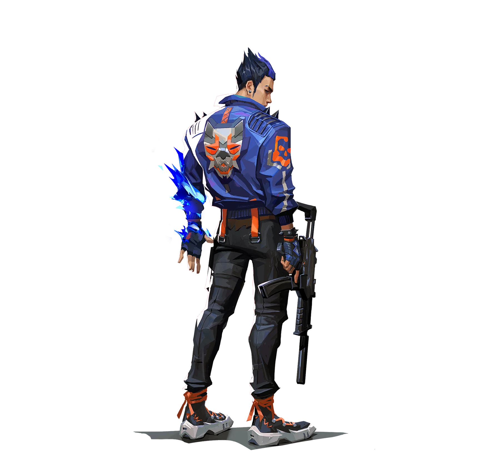
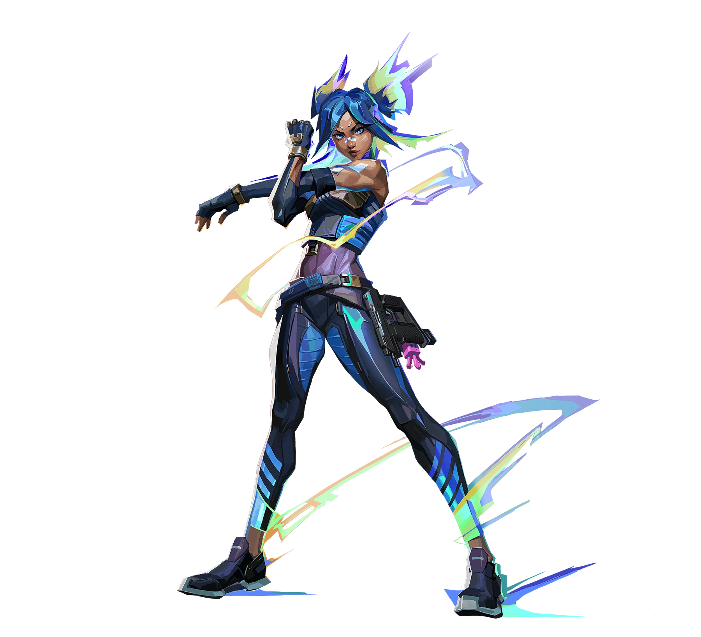

EDward Gaming / 박영찬
stew.
ALL IN. EVERY ROUND.
Razestew / 박영찬
stew / 赛场档案IN EVERY
IN EVERY
ROUND.
2026-10-02 / stew2026-09-26 / stew2026-05-17 / stew1 : 22026-05-16 / stew1 : 2

0 : 2EDG / GE
↗Champions 2026 Group Stage ⋅ Elim (B)
Summit 5 - 13 R 0.61 K / D / A 11 / 18 / 2
0 : 2EDG / LOUD
↗Champions 2026 Group Stage ⋅ Opening (B)
Lotus 8 - 13 R 0.56 K / D / A 11 / 17 / 21 : 2JDG / FPX
↗EWC 2026: China Qualifier Stage 2 ⋅ LR1
打开比赛记录1 : 2JDG / TYL
↗EWC 2026: China Qualifier Stage 2 ⋅ UBQF
打开比赛记录人物 × 比赛数据海报 · 点击打开原始记录
英雄池 / 按职业出场地图排序
HEROES
ON DUTY.
每一次选下英雄，都是另一种表达。Raze.
雷兹 / 30% 使用占比
95出场地图
245.3平均战斗评分
1.26击杀 / 死亡
1,688总击杀
82首杀
VLR 全时期已收录职业数据 · 2026-11-02 快照 · 出场单位为地图，使用占比不是胜率。查看该选手原始统计
EVERY
ROUND.
314职业地图
5,406总击杀
1.22全英雄 K/D
Champions 2026 Group Stage ⋅
Elim (B)
EDG / GE0 : 2+
Champions 2026 Group Stage ⋅
Opening (B)
EDG / LOUD0 : 2+
EWC 2026: China Qualifier Stage 2 ⋅
LR1
JDG / FPX1 : 2+
EWC 2026: China Qualifier Stage 2 ⋅
UBQF
JDG / TYL1 : 2+
VCT 26: CN Stage 1 Playoffs ⋅
LR2
JDG / DRG0 : 2+
最近已收录系列赛；日期和比分沿用 VLR 公开记录。上方生涯总计由全英雄表求和，K/D 为总击杀除以总死亡。
下一位 / EDG 阵容